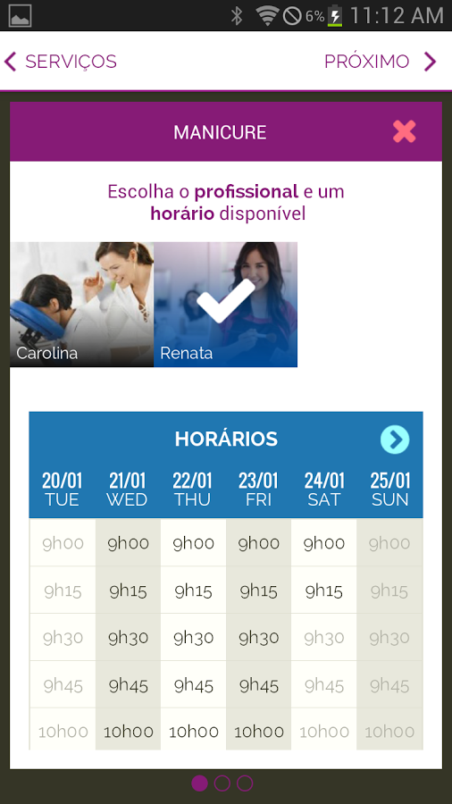
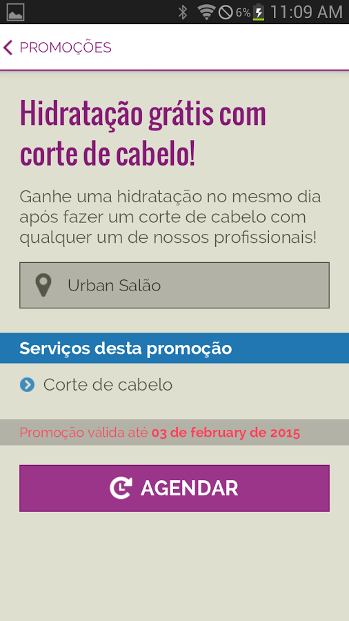
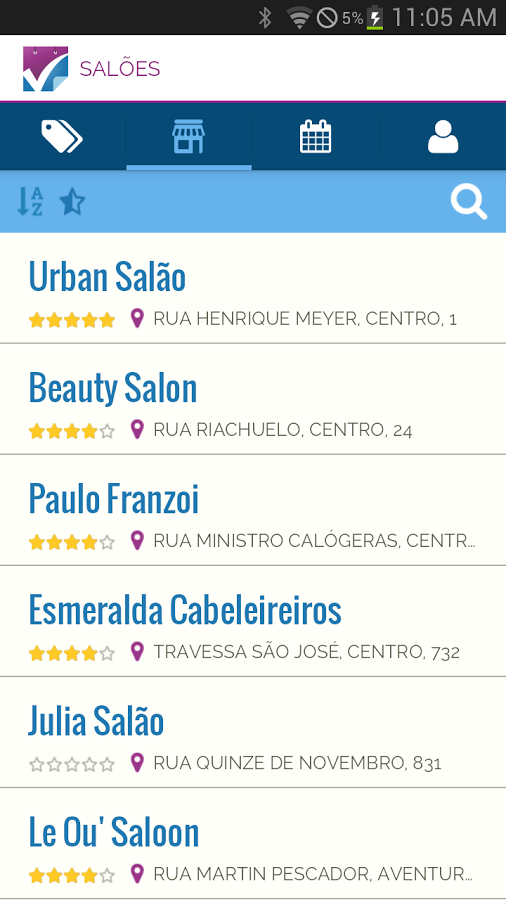
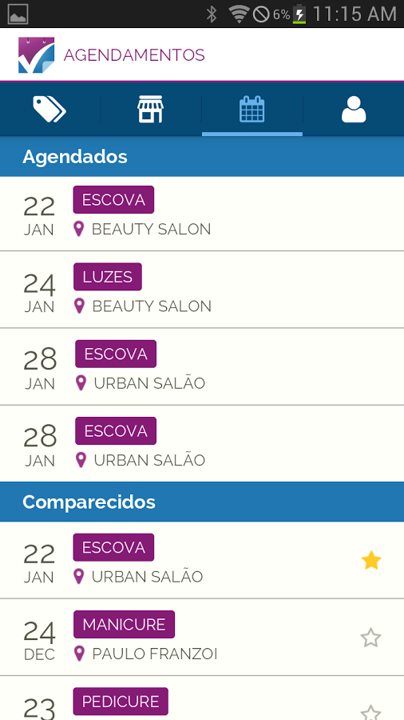
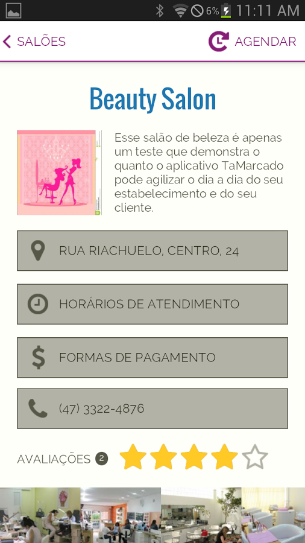
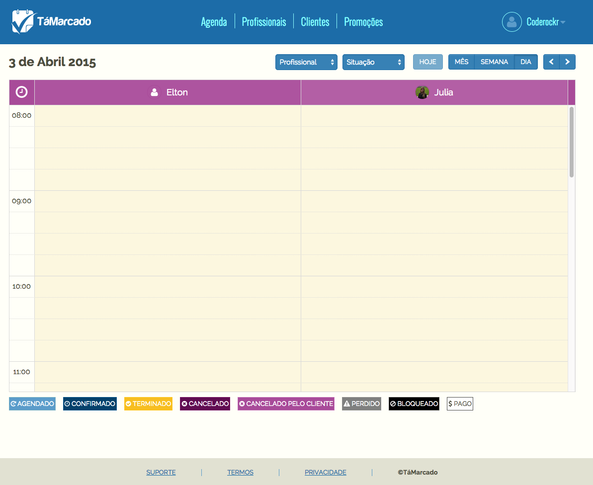
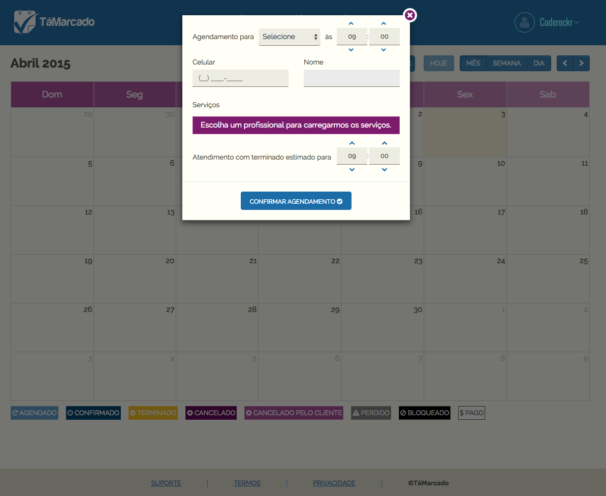
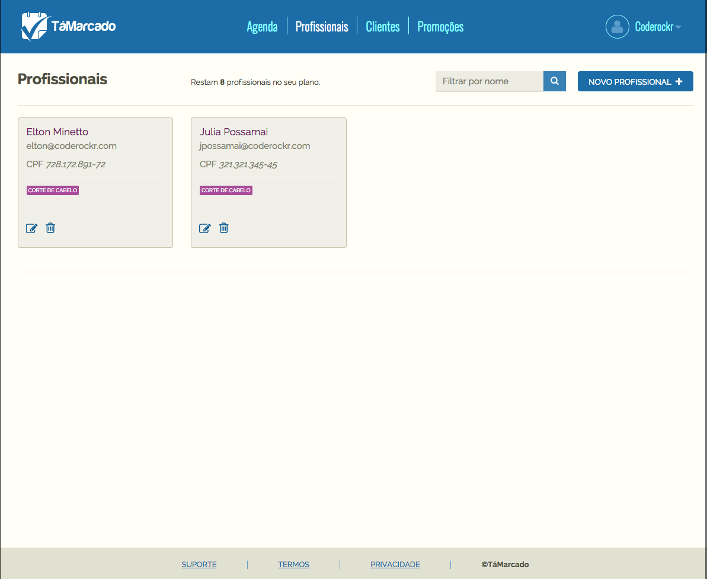
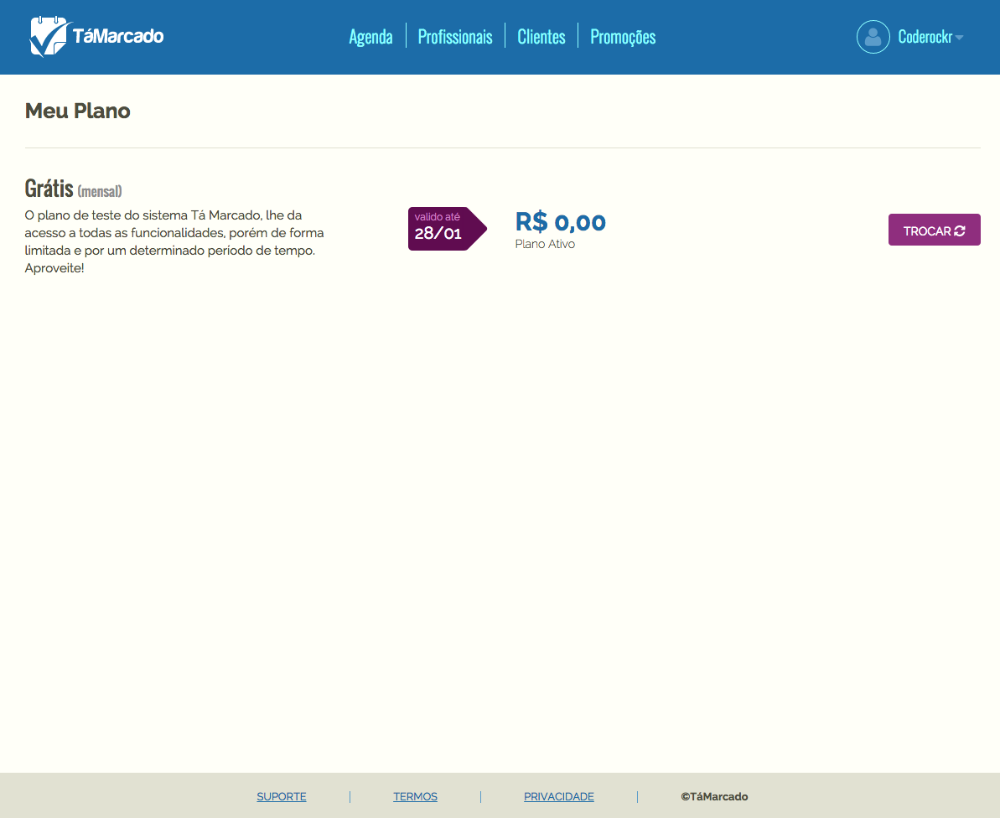

<div class="portfolio-single container">
        
    <div class="row">
    
        <div class="span8 portfolio-field portfolio-title">
            <h2>TaMarcado Web and App</h2>
        </div>
        
        <div class="span4 portfolio-field portfolio-nav">
            <a class="icon button back" href="#/portfolio">close</a>
        </div>
        
        <div class="span8 portfolio-field">

            <div class="video-wrapper">
                <iframe width="500" height="281" src="https://www.youtube.com/embed/dkNyUGoN4Vk" frameborder="0" allowfullscreen></iframe>
            </div>

            
            
            
            
            
            

            
            
            
            
        </div>
        
        <div class="span4 portfolio-field">
            
            <h3>Description</h3>
            
            <p>This is a very revolutionary project. I did as an employee at Coderockr. Basically 2 month deadline, envolving basically 4 ~ 5 people developer. I was responsible for the app at Android (100%) and the web development almost 80%. The project envolves a lot of new technologies, such as AngularJS standalone clients comunnication though CORS with the server. This decouple of clients and server was need because the project envolves 3 different clients from the beggining (Android, iOS and Web). The Android application envolve a lot of corporal sponsored open-source projects such as EventBus, Retrofit, Picasso, ButterKnife, and others.</p>
            
            <h3>Client</h3>
            
            <p><a href="http://tamarcadoapp.com.br/" target="_blank">Checkfone Startup</a></p>
            
            <h3>Technology</h3>
            <ul class="tags">
                <li><a>Java</a></li>
                <li><a>Android</a></li>
                <li><a>EventBus</a></li>
                <li><a>IntentService</a></li>
                <li><a>Retrofit</a></li>
                <li><a>Gson</a></li>
                <li><a>AngularJS</a></li>
                <li><a>Silex</a></li>
                <li><a>Doctrine2</a></li>
                <li><a>CORS</a></li>
            </ul>
            
            <div class="launch">
                <a href="https://play.google.com/store/apps/details?id=com.coderockr.tamarcado.app" target="_blank" class="btn">ANDROID PROJECT</a>
                <a href="http://tamarcadoapp.com.br/" target="_blank" class="btn">WEB PROJECT</a>                
            </div>
            
        </div>
        
    </div>
</div>